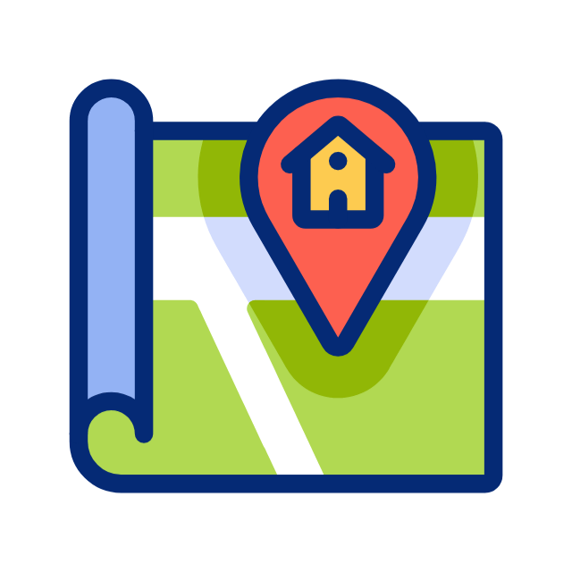

Onde se localiza?

MACEIRA, Sintra
A nossa creche encontra-se em Maceira, Sintra.
Para garantir a tranquilidade dos cães e a organização das atividades, as visitas são feitas apenas por marcação.
A morada exacta é partilhada após o agendamento da primeira avaliação.